This page is about other items in the game. There are no bonus points for wearing some of these items. Just for fun!
Jewelry is a type head gear in The Legend of Zelda: Breath of the Wild. Wearing jewelry has a corresponding special effect, they cannot be dyed, and can be upgraded at Great Fairy Fountains. You cannot wear other head gear while wearing jewelry.
Items in this page are DLC Gear in The Legend of Zelda Breath of the Wild. It is not part of any set, and only appears as an Expansion Pass Bonus for those who have purchased the DLC.
 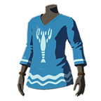
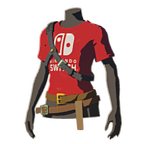
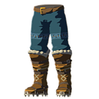
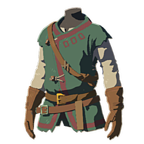
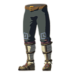
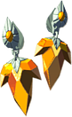
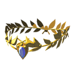
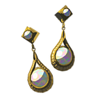
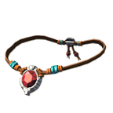
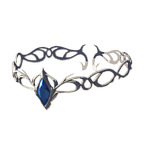
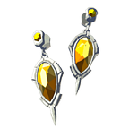
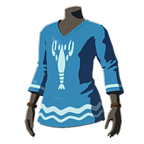
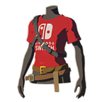
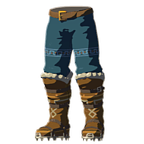
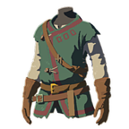
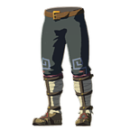
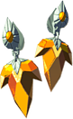
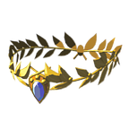
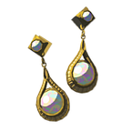
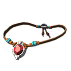
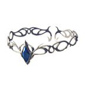
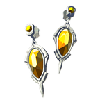